Thanks to everyone who responded to the call for help!


Hi, Now in my country Ukraine is War!
Ukrainian people are dying heroically, destroying the invaders and defending their Land and the ideals of the Free World!
 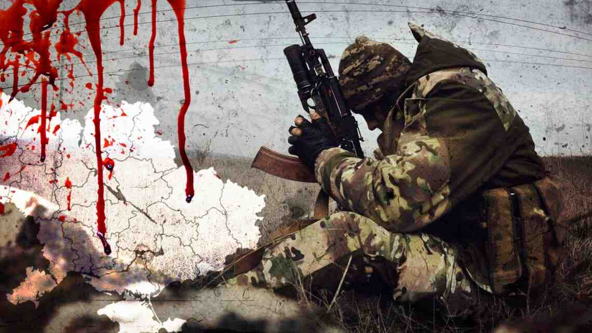
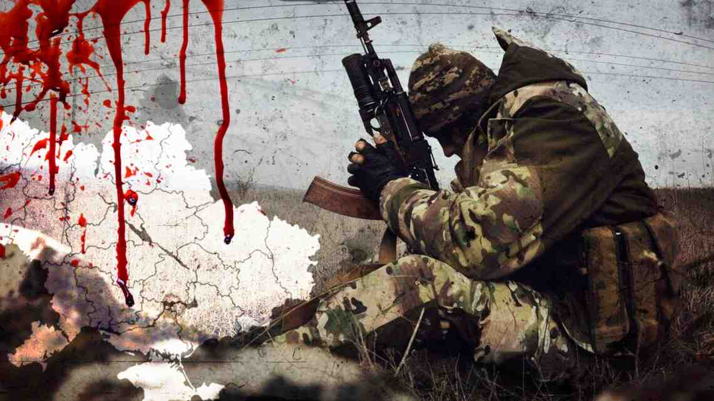

There is an air raid again in my city and a siren is buzzing!
Civilians are sitting in the basements of their houses, metro stations and other structures that can give a chance to survive during air, rocket and artillery shelling russian troopsof peaceful cities in Ukraine!
It is damp and cold in the cellars, people are terrified, and time flows slowly, it seems that it has stopped!


Dear friends, crypto enthusiasts, unfortunately, now is not the time to discuss cryptocoins!
So I, like other people, write on bitcointalk about the war in Ukraine, my home country, which I love very much!
I know that Ukraine will win and be a free country!
I want to express my opinion on the topic raised by the author of original post on bitcointalk.org
"original post"CLICK.


Regarding the above post, I want to say: Based on experience, I can say that you do not need special skill in managing a charitable foundation to help your city, but need the desire of some people to help other people who are in terrible trouble!


Thank God!
There are many merciful people in the World doing God's pleasing deeds!
Not indifferent people of the planet, want to save the lives of Ukrainian people!
One only needs to say to these wonderful people how they can help the Ukrainians!
Good people who do not stay away from the war support Ukrainians and urge other merciful people on social networks to do the same!
People know that civilians in Ukraine are being shot, shelled, bombed, their houses are on fire, they and their children are bleeding!


People provide help at the behest of the Heart, expressing sympathy for the Ukrainians, without demanding anything in return!
In the practice of donations known to me, none of the people who donated funds to help the Ukrainians asked to publish any reports, spreadsheet, photos of the work done or receipts!
Therefore, I was somewhat confused by the meaning of the quote from the original post, in which the author wrote:"I immediately want to say that I will not keep a spreadsheet, all I can do is publish here in the thread photos of the work done and checks, if any..."
As for the publication of a photo of the work done, do not try to do it!
"original post"CLICK.
Under the laws of wartime, photographing military and civilian objects can be regarded as high treason (a criminal offense).
 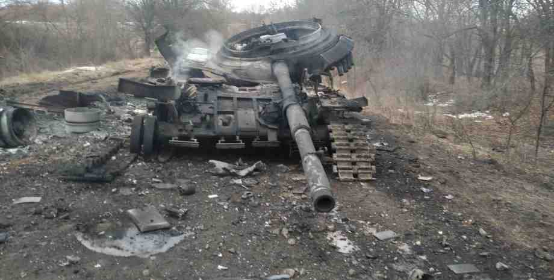
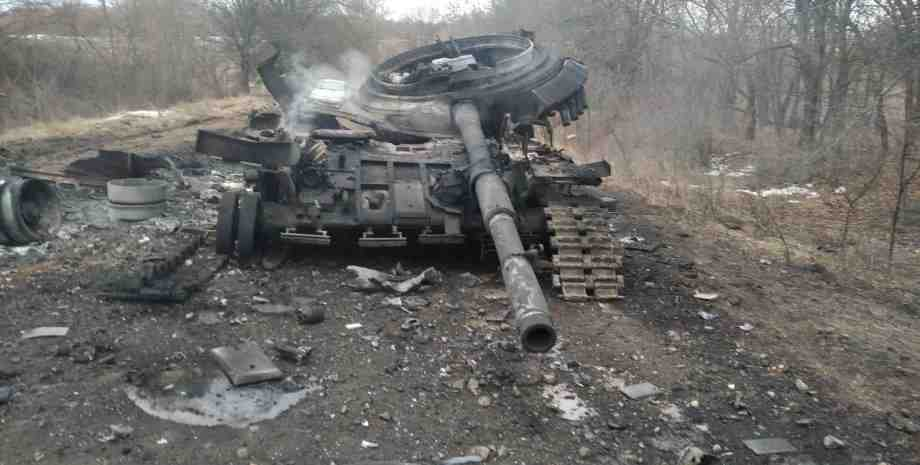
The war came to Ukraine on February 24. Copying Hitler's actions in 1941, russia launched a full-scale invasion.
Every day our soldiers, civilians, children and women, the elderly die.
Some towns and villages no longer have enough food, medicine and water, cut off from the light.
Of course, russia started the war to destroy Ukraine and everything Ukrainian.
The aggressor country is trying to make us a "little brother" again and impose its totalitarian regime. However, she will not succeed!
Although our army is bravely holding out and has already launched a counteroffensive in some sectors of the front, Ukraine needs your help!
Bitcointalk is a platform for communication of crypto enthusiasts, so I will not describe the advantages of cryptocurrencies in comparison with fiat payments.
Cryptocurrency is not a replacement for traditional donations, but an additional fundraising tool.
For those crypto enthusiasts who are ready to support Ukraine, which is burning in the fire of war, I will leave here a few links to sites through which you can send donations in cryptocurrency to support the Armed Forces of Ukraine from anywhere in the world.
I will say from experience that the advantages of cryptocurrencies for donations in wartime are obvious.
Ukrainians saw cryptocurrency as an alternative to public and private financial institutions, which are not trusted in wartime due to the threat of losing funds.
The even if the banking system goes out, people know how to convert cryptocurrency into cash and vice versa.
So, thanks to the crypt, it will be possible to buy everything you need during the War.
For volunteers who collect donations for the army, this is important, because some financial organizations equate their activities with "support for violence."
For example, on the first day of russia’s invasion of Ukraine, February 24, fundraising platform Ptatreon removed the page of the Turn Back Alive foundation, explaining that it "does not allow the funds raised on the platform to be used to support violence or purchase military equipment".
Evacuated Ukrainians can transfer funds to crypto, so that later they can safely convert it back to any fiat currency already abroad, not risking losing significant mounts due to a depreciation
Compared to bank transfers it's fast and easy.
"VIEW"CLICK.
"VIEW"CLICK.
"VIEW"CLICK.
"VIEW"CLICK.
"VIEW"CLICK.
"VIEW"CLICK.
The collected cryptocurrency by the State Funds is connected to the conversion process of the FTX and KUNA exchanges.
The exchange converts cryptocurrency into fiat, dollar or UAH and sends it to the accounts of the Ministry of Digital Development or the National Bank of Ukraine.

 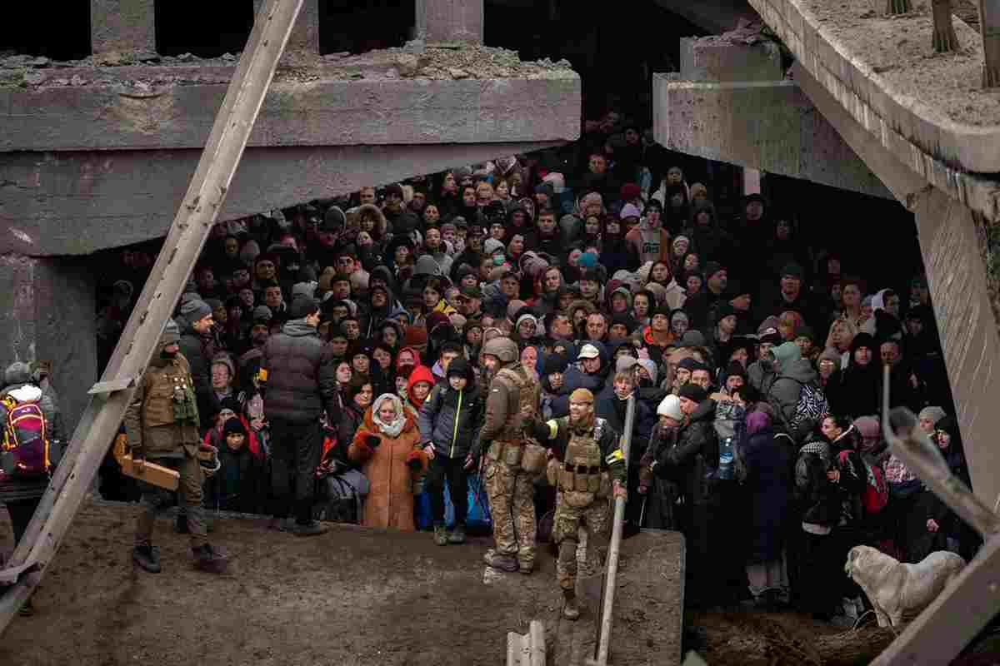
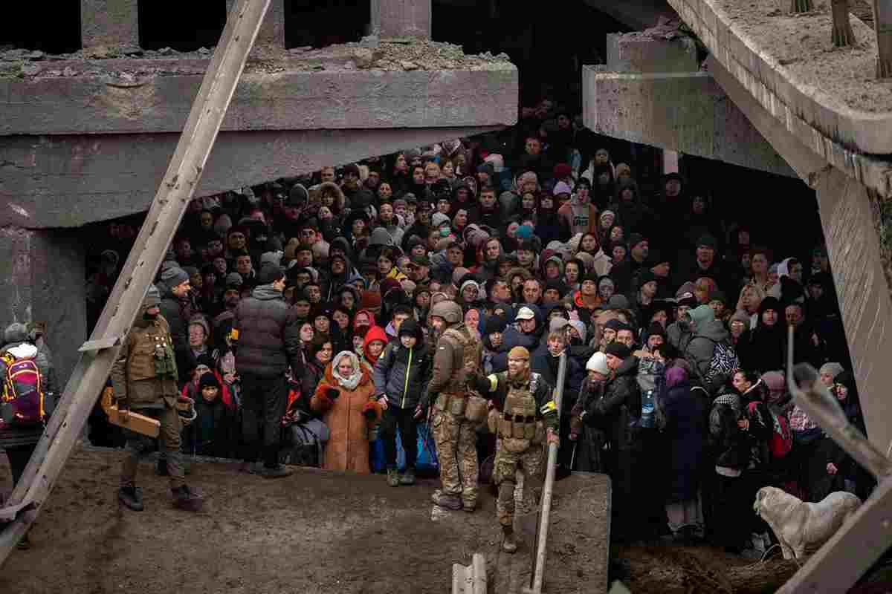
In support of the above, here is a quote from original post: "I am sure that the Ukrainian government is corrupt and oppressed many people within its borders for various reasons, by the way, so I would not donate to their official BTC addresses or anything"
"original link"CLICK.
Therefore, many people prefer to provide charitable assistance not through official state funds, but through ordinary people's volunteers, relatives or ordinary caring people in the field, and every day there are more and more such active people!
People want to help a particular city/region, or even an individual, family, or community.


Concerning the fears spread by about massive fundraising scams!
I will say this: There is a war going on in Ukraine, and against the general background of volunteers and kind people, they do not have any significant impact on the desire of kind people to help other kind people!
In such a terrible time the collective human mind is triggered and the majority of those who want to help, weighing the risks between fraudulent fundraising and saving human life, definitely choose help!
After all, even a little help can save someone a big life!
At a minimum, doing good deeds, people put a huge plus on their Karma!
In other words, our deeds ripen according to the principle “what we sow, we will reap” good deeds will respond with good, evil ones will turn into evil!
I think who wants to help he will help, and who does not want will find a reason to refuse!
Dear friends!
I do not insist, but only urge you to support the Ukrainians with your donations, in an amount that will not cause tangible damage to your personal well-being!
Of course, to help or not to help is the personal choice of each person!
Therefore, I do not write something like “God will judge you,” but I will say that if today you stand aside from grief in Ukraine, then do not be surprised if tomorrow you see Putin’s troops at the gates of your house!
This has happened more than once in the history of mankind!
Ukraine did not believe that russia would attack, but the treacherous attack happened!

In 1986, I happened to come face to face with the atomic grin of Chernobyl, I dare say that a greater Evil has come to Ukraine! The russian soldiers are destroyers, moroders, thieves, robbers, rapists, murderers of children and women!
Correctly wrote the author of the post
"original link"CLICK.
If you want to feel what most Ukrainians felt a few hours ago, watch these videos:
"VIEW"CLICK.
"VIEW"CLICK.
"VIEW"CLICK.
The power of Airborne Vacuum Bombs and rockets is terrifying even if you are just a spectator, these just those moments in life when you want to be away from all this.
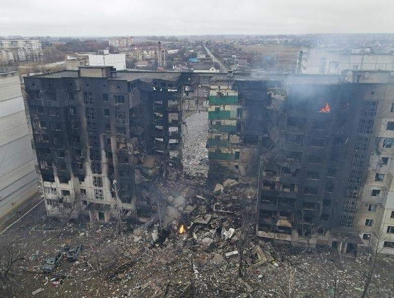 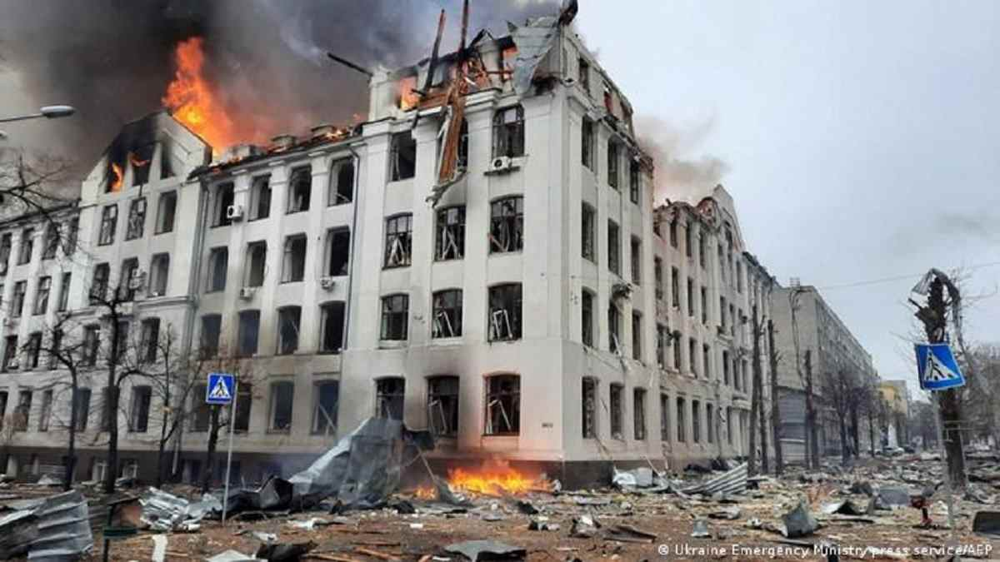And here is what the author of another post wrote Imagine that one day you wake up and see that your house came under artillery fire, 5 members of your family were killed, you were forced to become refugees, not knowing if you would ever return to the country, which they have called home all their lives.
I add video and "from myself". I warn you it's impossible to watch without tears! Destroyed houses, shelling of the hospital and maternity hospital, crying mothers!
"VIDEO"CLICK.


For example, the author of the post bitcointalk wrote I survived a bloody war and I know perfectly well what it means when grenades and air bombs fall around, and you every for a moment you wonder if it will hit you too.
Your country is now in the same situation as mine was in 1991, when Serbian executioners set out to demolish and kill everything in front of them, sparing neither small children nor pregnant women.
"original post"CLICK.
In Ukraine, the Patriotic War is going on and it is fighting not only for itself, but for the entire civilized World!
Just look at a few photo chronicles of this terrible war and try to imagine all this horror in reality, although I think that this is hardly possible without experiencing it personally! God save you from such trials!

Continuing the topic of Russian aggression against Ukraine, I would like to answer franky1 to his question regarding ways to support Ukrainians:
"original link"CLICK.
Dear Franky1, you asked: "If there are any local businesses that deliver in an area that accepts bitcoin?
And I mean legitimate businesses. (not fake phishing sites created last month) through which people can just buy things on a website where you can host some legitimate shelters/clearing points, physical addresses of hospitals (legitimate charities), etc. and use the delivery address of the shelter/hospital as the destination of the goods, so that they can then be delivered directly to the shelters/hospitals.
Franky1, about the "not fake phishing sites created last month" I will say this: talk about phishing risks may have been relevant in peacetime for discussions over a cup of coffee, under blue skies without bombs! But for the vast majority of people in a country at war, deceit is unacceptable in principle!
In war, other criteria of truth work!
 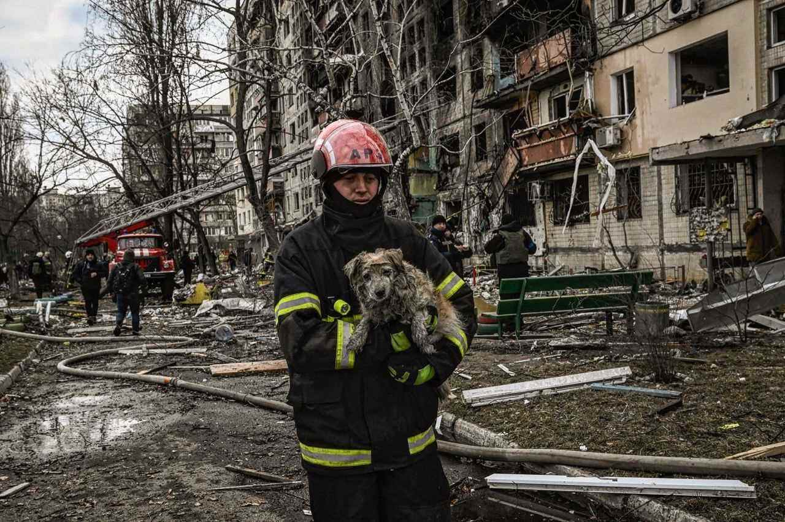
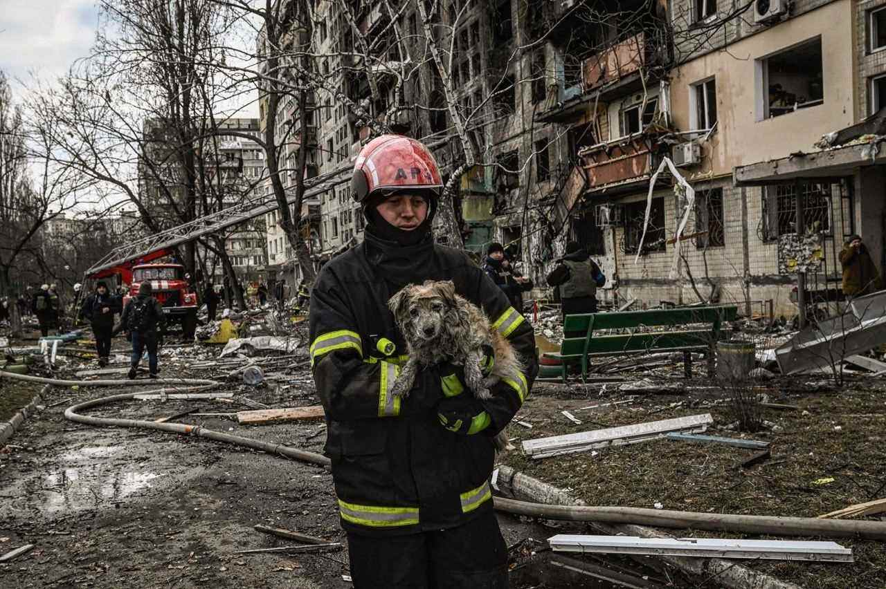
Yes, of course, new fundraising platforms will appear: yesterday, today, tomorrow and every new day, this is a good trend to achieve victory and peace!
To put it simply, just because a site has been recently registered doesn't mean it's a phishing fundraiser!
For example, here is one of the new https://needsupport.com.ua/ and this is an honest site, like hundreds of other funds in wartime.
It rather means that more good people want to help other good people!


Frankie1! Thank you and those who help Ukrainians in the fight for Freedom!
It doesn't matter who, how, how and to what extent you want to help Ukrainians! Any of your help is priceless and will be accepted by the people of Ukraine with gratitude!
I understand your concerns, and if they are a priority for you, then I will try to tell how you and other merciful people can help my compatriots directly!


So, here is my “step by step” life hack for those people who want to help Ukrainians, but do not trust corrupt officials, volunteer organizations, civil resistance groups and ordinary people who provide targeted assistance in their locations!
In the beginning, you need to focus your help on people who need help more urgently than others (like medication)!
You will also need to acquire skills in wartime logistics in order to effectively provide assistance!
Of course, without knowing the local, military situation, technical and logistical capabilities, this is not easy!
In besieged cities, destroyed and captured by Russian troops, your chances of providing targeted assistance are minimal, but you have to try (learn from correspondence with a person).
Although in humanitarian disaster cities I recommend providing support by cooperating with official volunteer and public organizations (more logistical and informational opportunities).
I believe that you will learn how to effectively save people without being directly in Ukraine!


1. Register your account on the Ukrainian crypto currency exchange (you can use Binance, but there are fewer payment options in UAH)
"VIEW"CLICK.
2. Replenish your exchange account with cryptocurrencies (any from the list of the exchange).
3. Exchange your crypto coins for UAH!
4. Find a city, a community and select the people you want to help or offer your help.
For example, using the telegram bot you can easily find both volunteers for your request and offer your own help.
"VIEW"CLICK.
For example here
"VIEW"CLICK.
+ For example this
"VIEW"CLICK.
Example a person needs medicament, he was left without money and his house.
Ask this person: price, quantity, where you can buy medicine and what payment methods are available (KUNA has 4 options in hryvnias + crypto, allowed in Ukraine).
5. Pay for the medicine and tell the Order number to the person!
Everything! You My Hero!

1. Find a chat group in social networks of a particular city and select the people you want to help or tell them that you want to help.
2. Ask a person how much money he needs and for what exactly (better focus on critical positions for life, but this is not necessary)!
3. Tell the person that you can donate the equivalent of the amount in cryptocurrency, but you need his crypto wallet (agree on the name of the coin).
4. After, transfer coins to the person!
The person himself will find where to exchange and buy what he needs! (via: stock exchange, bank, private exchanger)!
Everything! You my hero!
Unfortunately, very often needy people do not have crypto wallets and do not know how to use them!
A person will have to seek help from a knowledgeable person!
And if a person does not understand the topic of crypto, then there are simply no such people in his environment!
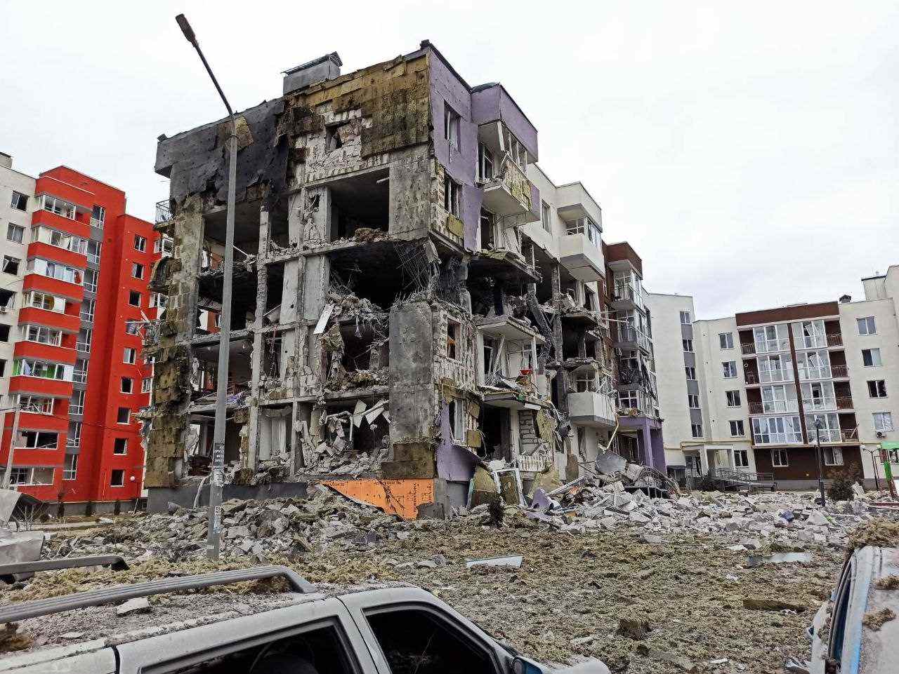

Dear Franky1, you can create your own charitable mini-fund and collect donations for Ukrainians from your relatives, friends, acquaintances and local urban communities.
Here are some recommendations!
For each community (Instagram, Facebook, Reedit, Twitter, LinkedIn and others) it is better to create separate crypto wallets!
Then, you will know how many merciful people there are in this social network!
With low responsiveness, draw the appropriate conclusion!
Do not waste time and the fire of your Soul on people without compassion!
Conversely, with positive people you will do a lot of good deeds!

Dear Franky1 and other merciful people, if you want to provide only one-time assistance, then it is better, easier, more reliable and more efficient to provide your assistance through official state funds or volunteers!


So, Franky1, if you want to help Ukrainians on your own, you have my instructions!
If you want to help through the official state fund of Ukraine, use my links to them!


Friends, remember - together we are strong! We are united as never before, we were not afraid, as the enemy hoped for, we rebelled!
The enemy suffers numerous losses of military equipment, weapons, aircraft, personnel, their soldiers are demoralized and surrender.
There is still a tough fight ahead, but let's stay calm and stick together.


We are all united in our aspirations and actions in the name of victory!
Free and European Ukraine to be, and we are doing everything to bring Peace to the World again!
With love and gratitude to you!

 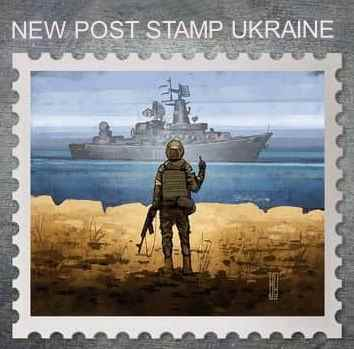
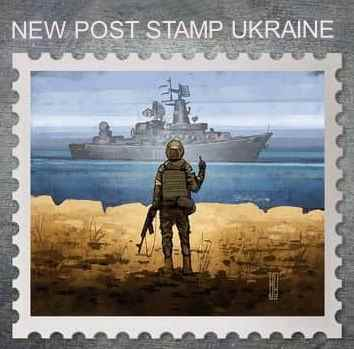

Thanks to everyone who responded to the call for help!
 ASK QUESTION TELEGRAM
ASK QUESTION TELEGRAM ASK QUESTION E-MAIL
ASK QUESTION E-MAIL EXIT GOOGLE
EXIT GOOGLE